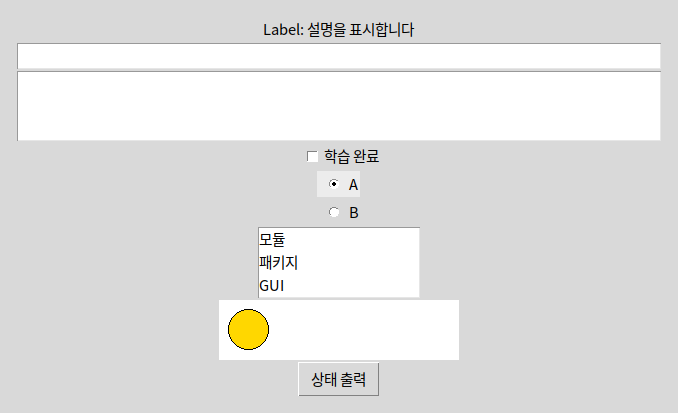

보여줄 글 → Label / 한 줄 → Entry / 여러 줄 → Text받을 정보의 형태를 먼저 정하면 위젯 이름이 따라옵니다. 아래 예제는 역할별로 나뉘어 있습니다.
 인공지능 파이썬 실무
인공지능 파이썬 실무Ⅱ. GUI 프로그래밍 · 주제 03 / 11
보여줄 정보와 받을 입력에 따라 위젯을 선택합니다.
대단원 Ⅱ. GUI 프로그래밍 교과서 40–59쪽
중단원 02. GUI 프로그래밍 작성 · 49–57쪽
소단원 01. tkinter의 구성 요소 · 50–51쪽
이 웹 주제의 연계 범위: 50쪽
웹 학습 주제 03 / 11
보여줄 정보와 받을 입력에 따라 위젯을 선택합니다.
| 역할 | tkinter | PySide6 |
|---|---|---|
| 최상위 창 | Tk | QWidget / QMainWindow |
| 그룹 | Frame | QWidget + Layout |
| 입력 읽기 | entry.get() | edit.text() |
| 표시 바꾸기 | label.config(text=...) | label.setText(...) |
| 독립 선택 | Checkbutton + BooleanVar | QCheckBox.isChecked() |
| 그룹 중 하나 | Radiobutton + StringVar | QRadioButton / QButtonGroup |
| 목록·그리기 | Listbox / Canvas | QListWidget / QGraphicsView |
BEFORE THE CODE
새 이름·속성이 코드에 나오기 전에 짧게 봅니다. 외우기보다 역할을 먼저 구별하세요.
보여줄 글 → Label / 한 줄 → Entry / 여러 줄 → Text받을 정보의 형태를 먼저 정하면 위젯 이름이 따라옵니다. 아래 예제는 역할별로 나뉘어 있습니다.
다른 위젯을 담는 상자입니다. Frame·QWidget이 컨테이너입니다.
체크·라디오 값을 담는 BooleanVar·StringVar입니다. 위젯이 아니라 변수에서 읽습니다.
HISTORY / VIDEO
위젯(widget)은 window와 gadget을 붙인 말입니다. 창 안의 재사용 부품을 가리키며, Tk의 Label·Button과 Qt의 QLabel·QPushButton은 같은 역할을 다른 이름으로 합니다.
Tkinter Course — Create Graphic User Interfaces in Python Tutorial (freeCodeCamp) ↗
영어 공개 강의입니다. Label·Button·입력칸·라디오만 먼저 보고, 계산기·데이터베이스는 건너뛰어도 됩니다. 학교 네트워크·연령 정책을 확인하세요.
RESULT PREVIEW

Tk 객체는 기본 창입니다. Label은 표시, Button은 명령, Entry는 한 줄 입력, Text는 여러 줄 입력입니다. Checkbutton은 독립적인 선택, Radiobutton은 묶음 중 하나의 선택, Listbox는 목록 선택입니다. Canvas는 도형·이미지 그리기 공간이며 Frame은 위젯을 묶는 컨테이너입니다.
위젯을 생성한 것만으로 배치가 완료되지는 않습니다. 부모 창이나 Frame을 지정하고 배치 관리자를 호출해야 합니다. BooleanVar·StringVar 같은 변수를 통해 체크 상태와 선택 값을 읽을 수 있습니다.
PySide6에서는 QApplication이 앱 실행을 관리하고 QWidget이 창·컨테이너 역할을 합니다. Label→QLabel, Button→QPushButton, Entry→QLineEdit, Text→QPlainTextEdit, Checkbutton→QCheckBox, Radiobutton→QRadioButton, Listbox→QListWidget으로 개념을 연결합니다. Canvas는 일대일 대응이 아니며 여기서는 QGraphicsScene/View로 도형을 그립니다.
위젯을 한 창에 모두 쌓기 전에, 역할별로 나누어 보세요. Label·Entry는 한 줄 읽고 보여 주기, Checkbutton·Radiobutton은 선택 값 읽기, Listbox·Canvas는 목록과 좌표 그리기입니다. 회원 가입의 이름·소개·약관 동의·학년 선택에 각각 어떤 위젯이 맞는지 고른 뒤 예제에서 값을 읽어 보세요. 57쪽 확인학습의 Frame·Button도 위젯입니다.
예제마다 페이지가 따로 있습니다. 카드를 누르면 설명과 코드가 함께 열립니다.
PRACTICE / RETRY / UNDERSTAND
설명·힌트·정답과 함께 스스로 채점합니다.